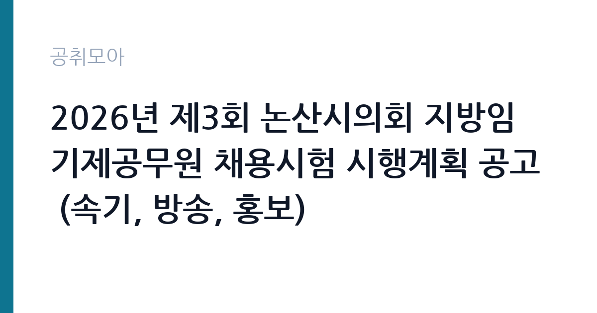

[지자체] 2026년 제3회 논산시의회 지방임기제공무원 채용시험 시행계획 공고 (속기, 방송, 홍보)
충청남도 논산시 의회 · 충남 · 마감 2026-10-12 (D-10) · 출처 나라일터

한눈에 보는 모집 조건
| 기관 | 충청남도 논산시 의회 |
|---|---|
| 공고명 | 2026년 제3회 논산시의회 지방임기제공무원 채용시험 시행계획 공고 (속기, 방송, 홍보) |
| 고용형태 | 임기제 |
| 근무지 | 충남 |
| 게시일 | 2026-10-02 |
| 마감일 | 2026-10-12 (D-10) |
지원자격, 이렇게 읽으세요
- 지방한시임기제7호 1명 지방시간선택제임기제 라급 2명
- 접수 ~2026-10-12 마감
- 세부 조건은 원문 공고문 확인
분야별로 직급과 조건이 다르므로 본인에게 맞는 분야를 골라 지원하십시오. 속기 분야는 지방한시임기제 7호로 속기 관련 자격이나 실무 경력을 요구하는 것이 일반적이며, 세부 요건은 붙임 공고문에서 확인하십시오. 방송과 홍보 분야는 지방시간선택제임기제 라급으로 영상 제작이나 보도자료 작성, SNS 운영 같은 실무 역량을 평가합니다. 관련 학과 졸업이나 실무 경력, 포트폴리오가 있으면 유리합니다. 분야별 중복 지원 가능 여부는 원문에서 확인하시고, 각 분야의 근무시간과 계약 조건이 다르므로 붙임 문서의 근무조건표를 꼼꼼히 보십시오.
이 공고의 포인트
이 공고의 매력은 한 번에 세 분야를 뽑는다는 점입니다. 속기와 방송, 홍보 중 본인의 강점에 맞는 분야를 골라 지원할 수 있어 선택의 폭이 넓습니다. 의회 근무는 본회의와 상임위원회 현장을 직접 다루는 일이라 행정과 정치 현장을 배우는 기회가 됩니다. 속기 분야는 한시임기제 7호로 전일제 근무이며, 방송과 홍보는 시간선택제 라급이라 시간 여유가 있습니다. 지방의회 임기제 경력은 이후 타 지자체 의회나 공공기관 홍보직 지원 시 직접적인 경력으로 인정받습니다. 10월 12일까지 열흘의 접수 기간이 있어 포트폴리오를 정비할 여유도 있습니다.
전형은 어떻게 진행되나
지방임기제공무원 채용은 서류전형과 면접시험으로 진행되는 것이 일반적입니다. 서류전형에서는 분야별 응시자격 충족 여부와 관련 경력을 평가하며, 방송과 홍보 분야는 포트폴리오 심사가 포함될 수 있습니다. 면접에서는 직무 수행 능력과 의회 업무에 대한 이해도를 검증합니다. 속기 분야 면접에서는 속기 실무 지식과 회의록 작성 경험을 묻고, 방송과 홍보 분야에서는 기획안 작성이나 위기 대응 질문이 나올 수 있습니다. 세부 전형 방법과 일정, 합격자 발표일은 붙임 공고문에서 반드시 확인하십시오. 접수 마감 전에 포트폴리오와 경력증명서를 완성해 두십시오.
원문에서 확인한 전형 방식
2026년 제3회 논산시의회 임기제공무원 채용시험 시행계획 공고(속기,방송,홍보분야)을 다음과 같이 공고합니다. ○ 채용분야 : 속기, 방송, 홍보 ○ 채용직급 : 속기 - 지방한시임기제 7호, 방송,홍보 - 지방시간선택제임기제 라급 ○ 채용기간 : 2026.10.2.(금) ~ 10.12.(월) ○ 채용기간 : [붙임 1] 참조 ○ 근무시간 : [붙임 1] 참조 붙임 1. 2026년 제3회 논산시의회 지방임기제공무원 채용시험 시행공고. 1부. 2. 2026년 제3회 논산시의회 지방임기제공무원 채용시험 제출서류. 1부. 끝.
이런 분께 추천해요
- 속기 자격을 보유하고 의회나 공공기관 회의록 업무를 원하는 분께 추천합니다. 한시임기제 7호 전일제 자리입니다.
- 영상 제작이나 보도자료 작성, SNS 운영 경험이 있는 분께 추천합니다. 방송과 홍보 라급 시간선택제로 본인의 실무를 살릴 수 있습니다.
- 지방의회와 행정 현장에 관심 있는 충남 지역 거주자께 추천합니다. 의회 근무 경력은 공공 홍보 분야 이직에 강점이 됩니다.
지원 전 체크리스트
- 분야별 응시자격과 근무시간, 계약기간이 다르므로 붙임 문서에서 본인 지원 분야의 조건을 정확히 확인하십시오.
- 방송과 홍보 분야 지원자는 포트폴리오 제출 여부와 형식을 원문에서 확인하고 마감 전에 완성하십시오.
- 시간선택제 라급의 주당 근무시간과 보수, 한시임기제 7호의 월봉 조건을 원문 보수 항목에서 확인하십시오.
- 접수가 10월 2일부터 10월 12일까지이므로 마감일 혼잡을 피해 여유 있게 접수하고 접수증을 보관하십시오.
모집 일정과 제출 타이밍
접수는 2026년 10월 2일부터 10월 12일까지 열흘간입니다. 서류전형과 면접 일정은 붙임 공고문에서 확인하십시오. 방송과 홍보 분야는 포트폴리오 정리에 시간이 걸리므로 이번 주말을 활용해 대표작을 선별하고 기획 의도를 정리해 두십시오. 속기 분야는 속기 자격증과 회의록 작성 경력을 증명할 서류를 발급받아 두십시오. 접수 마감 후 서류전형과 면접이 차례로 진행되므로 지원과 동시에 예상 질문을 준비하면 일정에 여유가 생깁니다.
직무 이해하기: 지자체
속기 직무는 의회 본회의와 상임위원회, 특별위원회 회의의 발언 내용을 속기로 기록하고 회의록을 작성하는 일입니다. 정확한 기록이 의정 활동의 공식 자료가 되므로 집중력과 속기 정확성이 핵심 역량입니다. 방송 직무는 의회 본회의 생중계와 홍보 영상 제작, 회의 영상 아카이빙을 담당합니다. 홍보 직무는 보도자료 작성과 언론 응대, 의회 SNS와 홈페이지 운영으로 의정 활동을 시민에게 알리는 일을 맡습니다. 세 분야 모두 의회 회기 일정에 맞춰 업무 강도가 오르내리는 특성이 있어 회기 중에는 야간과 휴일 근무가 발생할 수 있습니다.
자기소개서 작성 팁
응시원서와 경력기술 서류에는 분야별 실무 경험을 구체적으로 적으십시오. 속기 분야는 속기 자격 등급과 회의록 작성 경험을 회의 규모와 함께 기술하고, 방송 분야는 제작한 영상의 조회수와 기획 의도를, 홍보 분야는 보도자료 채택 실적과 SNS 운영 성과를 수치로 적으면 설득력이 높아집니다. 지방의회 업무에 대한 이해도를 보여주는 것도 중요하므로 논산시의회의 recent 의정 활동을 살펴보고 지원동기와 연결하십시오. 시간선택제 지원자는 제한된 근무시간 안에 성과를 내겠다는 업무 계획을 함께 제시하십시오.
면접 준비 포인트
면접에서는 분야별 실무 질문과 의회 이해도를 묻는 질문이 나옵니다. 속기 분야는 속기 방식과 회의록 검수 절차, 속보 상황에서 정확성을 유지하는 방법을 준비하십시오. 방송 분야는 생중계 사고 대응과 영상 기획안을, 홍보 분야는 부정적 이슈 발생 시 대응 방향을 묻는 질문이 예상됩니다. 논산시의회의 구성과 recent 쟁점에 대해 공부하고 가면 관심을 어필할 수 있습니다. 임기제 근무 조건을 이해하고 있다는 전제 아래 계약기간 동안의 성과 목표를 밝히면 좋은 인상을 줄 수 있습니다.
급여·근무조건 읽는 법
보수는 직급별로 원문 공고문의 보수 항목에서 확인하십시오. 속기 분야인 지방한시임기제 7호는 월봉으로 지급되며, 과거 공고 기준 7호 월봉이 210만원대였던 바 있으나 매년 인상되므로 2026년 기준액은 원문이 유일한 기준입니다. 방송과 홍보 분야인 시간선택제임기제 라급은 8급 상당으로, 참고로 2026년 타 지자체 공고에서 라급 주 35시간 기준 약 3,745만원이 고시된 바 있습니다. 다만 기관마다 책정액이 다르므로 이 수치는 참고용으로만 보십시오. 기본급 외에 명절휴가비와 연가보상비, 시간선택제 수당 지급 조건도 원문에서 함께 확인하십시오. 경쟁률과 합격선은 공개되지 않습니다.
자주 묻는 질문
- 속기와 방송, 홍보 분야에 중복 지원할 수 있습니까?
중복 지원 가능 여부는 붙임 공고문에 명시되어 있습니다. 통상 1개 분야만 지원받는 경우가 많으므로 원문에서 확인하고 본인에게 가장 유리한 분야를 선택하십시오. - 한시임기제 7호와 시간선택제 라급의 차이는 무엇입니까?
한시임기제 7호는 전일제 월봉 계약직이며, 시간선택제 라급은 주당 근무시간이 짧은 시간제 임기직으로 보수가 근무시간에 비례합니다. 계약기간과 근무시간은 붙임 문서에서 확인하십시오. - 의회 근무가 처음인데 지원해도 됩니까?
응시자격의 경력 요건을 충족하면 의회 경험이 없어도 지원할 수 있습니다. 다만 면접에서 의회 업무 이해도를 묻으므로 본회의와 상임위원회 운영 방식은 미리 공부해 두십시오.
함께 보면 좋은 공고
[지자체] 제주특별자치도 임기제공무원 임용시험 시행계획 공고(시민고충처리위원회 고충민원전문조사관 분야) — 마감 2026-10-19[지자체] 2026년 제9회 대전광역시 동구 지방임기제공무원 채용시험 시행계획 공고(기록물관리 전문요원) — 마감 2026-10-14[지자체] 시간선택제임기제공무원[마급]보건행정 채용 공고 — 마감 2026-10-07출처: 나라일터 공개정보를 바탕으로 공취모아가 정리한 안내글입니다. 모집 조건·일정은 변경될 수 있으니 지원 전 반드시 원문 공고문을 확인하세요. 본 글은 정보 제공용이며 합격을 보장하지 않습니다.